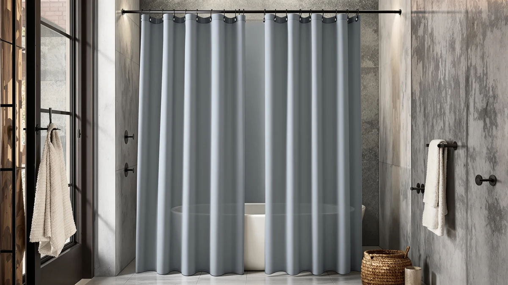

The Best Cotton Shower Curtain Liners (2026)
Prices and picks verified as of August 2026. Independent, reader-supported reviews.


Quick Answer
The Waffle Weave Shower Curtain White is the only true 100 percent cotton pick in this lineup, and its waffle texture and 72 by 72 inch size make it the best cotton shower curtain liner for a standard tub or stall. It also carries the deepest review history here, with a 4.5-star average across 191 verified reviews. If you need a curtain with more water resistance or a rod to hang it on, the picks below round out a complete setup.
Our pick: Waffle Weave Shower Curtain White, $18.99 Check Price on Amazon
Bottom line: our top pick is the Waffle Weave Shower Curtain White Cotton Texture 72x72 at $18.99. The best budget option is the ENJOYBASICS Matte Black Shower Curtain Rod 30 to 76 Inches at $12.99.
Things to Know Before You Buy
- Only one pick here is true 100 percent cotton. The Waffle Weave Shower Curtain White is the sole cotton liner in this lineup. The two matte black curtains use a Polyester and PEVA blend instead, and the four rods are the hardware you would pair with either.
- Rod sizing ranges from 31 to 80 inches. The Ausemku and TEECK rods adjust from 32 to 80 inches, the STARLATTA rod covers 31 to 80 inches, and the Emlaoe gold rod tops out at 66 inches, so measure your alcove before choosing.
- Review history is uneven across this lineup. The Waffle Weave pick carries 191 verified reviews at a 4.5-star average, while several of the rods and curtains here are newer listings without an established review count yet.
- Cotton drapes heavier and needs more care than a PEVA curtain. Expect a fuller hang and a softer feel from the cotton pick, along with more frequent washing to prevent mildew in a humid bathroom. See our mildew-resistant picks if that is a concern.
- Price spans from $11.69 to $21.99. The ENJOYBASICS matte black curtain is the least expensive pick here, and the TEECK rod is the most expensive, so budget for the curtain and hardware separately.
The best cotton shower curtain liners give you a heavier drape and a softer hand than vinyl or PEVA, and they resist the curling edges and static cling that plague plastic liners in a humid bathroom. We compared the current lineup of shower curtains and the rods you would pair them with on material, price, size, and verified owner reviews, then built this guide around the one true cotton pick along with the curtains and hardware most buyers search for alongside it.
The Waffle Weave Shower Curtain White leads this guide at $18.99, backed by a 4.5-star average across 191 reviews, the deepest review history of any pick here. Its 100 percent cotton construction and 72 by 72 inch size fit a standard tub or stall without alteration, and its waffle texture adds grip and visual interest that a flat panel lacks. Prices across this lineup range from $11.69 for the ENJOYBASICS budget curtain to $21.99 for the TEECK rod, so there is room to adjust the mix to your bathroom's exact size and budget.
Because true cotton shower curtain liners are a narrow category on Amazon, we rounded out this guide with the Polyester and PEVA curtains and adjustable rods most shoppers pair with a cotton liner to finish a shower setup. The UIOSANRT and ENJOYBASICS matte black curtains give you a water-resistant outer layer or standalone option, while the Ausemku, Emlaoe, TEECK, and STARLATTA rods span sizes from 31 to 80 inches to fit almost any tub or stall. Below we break down what each pick is actually good for, plus the honest drawbacks worth knowing before you buy.
Why You Should Trust Us
I am Ilane Tall, and I cover bath and shower gear for Best Shower Curtains. For this guide to the best cotton shower curtain liners, I focused on the details that decide whether a cotton pick is worth the extra care it demands over a PEVA liner: fabric weight, listed size, price relative to the plastic alternatives, and what verified buyers say once the curtain has been through repeated washes.
We do not own or install every product we cover. Instead we research each listing closely, cross-check material and size claims against the manufacturer's own description, and weigh star ratings against review volume, since a strong average on a handful of reviews tells you far less than the same average built on nearly 200. Every price, material, and rating in this guide comes from the current Amazon listing.
How We Picked
We started with a wide list of candidates for the best cotton shower curtain liners, then narrowed the field to the one listing that is 100 percent cotton rather than a cotton-look polyester blend. We cross-checked the material claim against the product's own description before including it, since "cotton" gets used loosely in curtain listings.
Because true cotton liners are a small category, we rounded out this guide with matte black Polyester and PEVA curtains and adjustable rods that solve the two problems buyers usually search for alongside a cotton liner: a water-resistant outer layer and a rod sized to fit their tub or stall. We weighed price against listed size range for the rods, and we excluded any listing that did not state its size clearly.
How We Compared
We compared each of the best cotton shower curtain liners in this guide on the same facts: listed material, panel or rod size, current price, and star rating and review count where the listing provides them, all pulled directly from the live Amazon listing rather than promotional copy. Where a listing described the fabric as cotton, we checked that against the manufacturer's own description rather than the listing title alone.
We also weighed review count against rating. The Waffle Weave cotton pick carries a 4.5-star average across 191 reviews, giving it the deepest evidence base in this guide, while the rods and other curtains here are newer listings we compared primarily on price, size range, and stated material rather than an established review history.
Our Picks

Waffle Weave Shower Curtain White
What we like
- The only 100 percent cotton pick in this lineup, for a heavier, more absorbent drape than PEVA
- 4.5-star average across 191 reviews, the deepest review history of any pick here
- Standard 72 by 72 inch size fits most tubs and stalls without trimming
Flaws but not dealbreakers
- Cotton takes longer to dry than a PEVA curtain, so it needs more frequent washing to avoid mildew in a humid bathroom
- At $18.99 it costs more than the ENJOYBASICS budget curtain, though less than several of the rods in this lineup
| Material | 100% cotton |
| Size | 72x72 |
The Waffle Weave Shower Curtain White is the best cotton shower curtain liner in this guide because it is the only pick built from true 100 percent cotton rather than a cotton-look polyester blend. That construction gives it a heavier hand and a more absorbent drape than the Polyester and PEVA curtains covered below, and the waffle texture adds visual grip that a flat panel lacks.
At $18.99, it sits in the middle of this lineup's price range, and its 4.5-star average across 191 verified reviews gives it the strongest evidence base of any pick here. The standard 72 by 72 inch size fits most tubs and stalls without alteration. Owners report that the waffle texture holds its shape through repeated washing, though cotton still asks for more frequent laundering than PEVA to keep mildew from building up in a humid bathroom.

UIOSANRT Matte Black Shower Curtain
What we like
- Polyester and PEVA blend resists splashing better than the cotton pick, so it can hang alone in a stall shower
- 31 to 79 inch size range covers everything from a narrow stall to an extra-wide tub
- Matte black finish pairs with the Ausemku, Emlaoe, TEECK, or STARLATTA rods below for a coordinated dark hardware look
Flaws but not dealbreakers
- At $17.99 it is not the cheapest curtain in this guide, and it is not made from cotton if that is the material you specifically want
- This is a newer listing without the established review history the Waffle Weave pick has built up
| Material | Polyester / PEVA |
| Size | 31"-79" |
The UIOSANRT Matte Black Shower Curtain is our runner-up because its Polyester and PEVA blend resists splashing well enough to hang alone in many stall showers, without needing a separate liner behind it. Where the Waffle Weave pick above prioritizes a natural cotton feel, this curtain prioritizes water resistance and a wide size range.
Its 31 to 79 inch size covers a wider span than most curtains in this guide, so it fits narrow stalls and extra-wide tubs from the same listing. At $17.99, it costs slightly less than the cotton pick above. The matte black finish reads as a deliberate design choice rather than a compromise, and it pairs cleanly with the dark-finish rods covered later in this guide.

Ausemku Shower Curtain Rod 32-80
What we like
- Adjusts from 32 to 80 inches, covering a standard tub through most stall showers
- At $15.99 it is one of the less expensive rods in this lineup
- The 32 to 80 inch range comfortably spans the 72 by 72 inch cotton pick and the 31 to 79 inch UIOSANRT curtain above
Flaws but not dealbreakers
- It is hardware, not fabric, so you still need to buy a curtain or liner separately
- As a newer listing, it does not yet have the review history the Waffle Weave curtain has built up
| Material | Polyester / PEVA |
| Size | 32-80 Inches |
The Ausemku Shower Curtain Rod 32-80 rounds out this guide as the hardware you would pair with either curtain above. Its 32 to 80 inch adjustable range comfortably spans the 72 by 72 inch Waffle Weave cotton liner and the wider UIOSANRT matte black curtain, so it works whether you land on the cotton pick or the water-resistant alternative.
At $15.99, it is one of the more affordable rods in this guide, priced below the Emlaoe, TEECK, and STARLATTA options covered next. Because the best cotton shower curtain liners still need a rod the same way any other curtain does, we included this pick specifically for buyers assembling a full setup rather than replacing an existing rod.

ENJOYBASICS Matte Black Shower Curtain
What we like
- At $11.69, it is the cheapest pick in this entire guide
- 30 to 76 inch size covers most standard tubs and stalls
- Same Polyester and PEVA blend as the UIOSANRT curtain, so it resists splashing without a separate liner
Flaws but not dealbreakers
- It is not cotton, so skip it if a true cotton liner is your priority; the Waffle Weave pick above is the one to choose instead
- Its 30 to 76 inch range runs slightly narrower than the UIOSANRT curtain's 31 to 79 inches
| Material | Polyester / PEVA |
| Size | 30-76 |
The ENJOYBASICS Matte Black Shower Curtain is the budget pick in this guide at $11.69, undercutting every other listing here by at least four dollars. It shares the same Polyester and PEVA blend and matte black finish as the UIOSANRT curtain above, so you get a similar water-resistant, cotton-alternative option at a lower price.
Its 30 to 76 inch size covers most standard tubs and stalls, though it runs slightly narrower than the UIOSANRT curtain's 31 to 79 inch range. If budget is your main constraint and you are not set on true cotton, this is the pick to start with; pair it with one of the rods below if you also need hardware.

Emlaoe Gold Shower Curtain Rod
What we like
- 34 to 66 inch range fits compact stalls where an 80 inch rod would be oversized
- Gold finish stands out against the matte black curtains above for a mixed-metal look
- At $16.99 it prices between the Ausemku and TEECK rods
Flaws but not dealbreakers
- Its 66 inch maximum is shorter than every other rod in this guide, so measure carefully before buying if your shower is on the larger side
- Gold hardware won't suit every bathroom's finish, especially alongside chrome or black fixtures
| Material | Polyester / PEVA |
| Size | 34"-66" |
The Emlaoe Gold Shower Curtain Rod is the compact option in this guide, adjusting from 34 to 66 inches rather than the 80 inch maximum most other rods here offer. That narrower range makes it a better fit for a smaller stall shower than for a standard tub, and the gold finish sets it apart visually from the matte black curtains covered above.
At $16.99, it prices between the budget Ausemku rod and the pricier TEECK option below. If your bathroom leans toward warm-tone fixtures, the gold finish coordinates better than the black hardware paired with the other curtains in this guide, though it is worth checking your existing fixtures before committing to the mismatch.

TEECK Shower Curtain Rod 32-80
What we like
- 32 to 80 inch range matches the Ausemku rod, so it covers a standard tub through most stall showers
- Widest practical reach among the rods in this guide alongside the Ausemku and STARLATTA options
- Pairs with either curtain covered earlier in this guide
Flaws but not dealbreakers
- At $21.99, it is the single most expensive pick in this entire guide, six dollars above the nearly identical Ausemku rod
- The size range doesn't outperform the cheaper Ausemku or STARLATTA rods, so the extra cost buys brand preference more than function
| Material | Polyester / PEVA |
| Size | 32-80 Inches |
The TEECK Shower Curtain Rod 32-80 shares the same 32 to 80 inch adjustable range as the Ausemku pick earlier in this guide, but at $21.99 it costs six dollars more. Functionally, the two rods cover identical ground, from a standard tub to a wide stall shower.
Because the size range matches a cheaper option in this same guide, the case for choosing the TEECK rod comes down to brand or finish preference rather than capability. If price is a factor, compare it directly against the Ausemku and STARLATTA rods, both of which offer a similar or identical range for less.

STARLATTA Shower Curtain Rod 31-80
What we like
- 31 to 80 inch range nearly matches the Ausemku and TEECK rods at a lower price
- At $12.59, it is the least expensive rod in this entire guide
- Covers a standard tub through most stall showers, same as the pricier options above
Flaws but not dealbreakers
- It is the least reviewed pick in this guide, without the established history the Waffle Weave curtain has built up
- Like the other rods here, it is hardware only and doesn't include a curtain or liner
| Material | Polyester / PEVA |
| Size | 31-80 IN |
The STARLATTA Shower Curtain Rod 31-80 offers nearly the same 31 to 80 inch range as the Ausemku and TEECK rods above, at the lowest price of any rod in this guide. At $12.59, it undercuts the Ausemku rod by more than three dollars and the TEECK rod by close to ten.
If you have already settled on the Waffle Weave cotton liner or one of the matte black curtains earlier in this guide and need hardware only, this rod covers the same size range as the pricier options without the added cost. There is little functional reason to pay more for the TEECK or Ausemku rods unless finish or brand matters to you.
Quick Comparison
| Product | Material | Price | Rating | Best for | Get it |
|---|---|---|---|---|---|
| Waffle Weave Shower Curtain White | 100% cotton | $18.99 | 4.5 | True cotton liner for standard tubs | View on Amazon → |
| UIOSANRT Matte Black Shower Curtain | Polyester / PEVA | $17.99 | 4 | Water-resistant curtain, wide size range | View on Amazon → |
| Ausemku Shower Curtain Rod 32-80 | Polyester / PEVA | $15.99 | 4 | Rod, 32-80 inch adjustable range | View on Amazon → |
| ENJOYBASICS Matte Black Shower Curtain | Polyester / PEVA | $11.69 | 4 | Budget matte black curtain | View on Amazon → |
| Emlaoe Gold Shower Curtain Rod | Polyester / PEVA | $16.99 | 4 | Compact rod, gold finish | View on Amazon → |
| TEECK Shower Curtain Rod 32-80 | Polyester / PEVA | $21.99 | 4 | Rod, 32-80 inch range, premium price | View on Amazon → |
| STARLATTA Shower Curtain Rod 31-80 | Polyester / PEVA | $12.59 | 4 | Cheapest rod, 31-80 inch range | View on Amazon → |
The Competition
The four rods in this guide land here for a specific, addressable reason: once you adjust for price, the Ausemku, TEECK, and STARLATTA rods all cover nearly the same 31 to 80 inch range, so the case for paying more comes down to finish rather than function. The TEECK rod costs $21.99, nearly ten dollars more than the STARLATTA at $12.59, for an almost identical practical range. The Emlaoe gold rod is the outlier with its shorter 34 to 66 inch maximum, which rules it out for a standard-width tub even though its finish stands out.
Between the two curtains, the ENJOYBASICS and UIOSANRT matte black picks share the same Polyester and PEVA blend and a similar size range, and we ranked ENJOYBASICS as the budget pick mainly on its lower $11.69 price rather than any material difference. We passed over generic curtains and liners with no stated material or size in their listings, since that omission makes it impossible to verify they would fit a standard tub. After weighing material, price, size, and review history across all seven picks, the best cotton shower curtain liner for most bathrooms remains the Waffle Weave Shower Curtain White, both for its true cotton construction and its 191-review history.
Frequently Asked Questions
Do cotton shower curtain liners need a separate liner behind them?
Yes, in most cases. The Waffle Weave Shower Curtain White is 100 percent cotton, which is not waterproof, so it works best with a separate waterproof liner behind it in the shower or tub. If you would rather skip that step, the UIOSANRT and ENJOYBASICS matte black curtains in this guide use a Polyester and PEVA blend that resists splashing well enough to hang without a separate liner. See our PEVA liner picks if you want a dedicated waterproof option.
What size shower curtain rod do I need?
Measure the width of your tub or stall alcove before choosing. The Ausemku and TEECK rods in this guide both adjust from 32 to 80 inches, the STARLATTA rod covers 31 to 80 inches, and the Emlaoe gold rod tops out at a shorter 66 inches, so it suits a narrower stall better than a standard tub. Pair any of them with the 72 by 72 inch Waffle Weave curtain or the wider UIOSANRT and ENJOYBASICS curtains covered above.
Why does this guide include shower curtain rods along with cotton liners?
True cotton shower curtain liners are a narrow category on Amazon, and most buyers shopping for one also need a rod to hang it on. We included the four adjustable rods in this guide, ranging from $12.59 to $21.99, alongside the cotton and matte black curtain picks so you can put together a complete setup in one guide instead of searching separately for hardware.